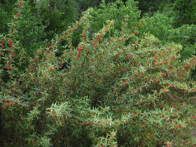
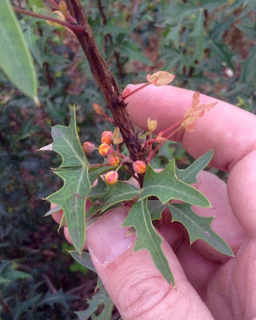
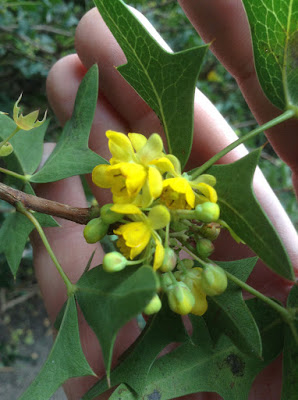
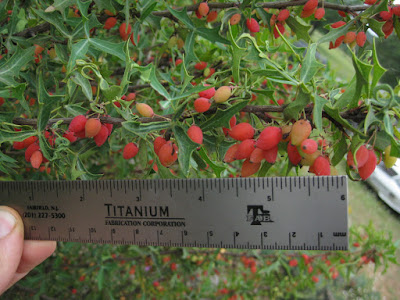
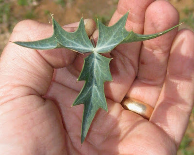
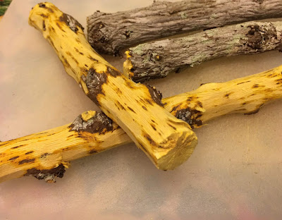

Scientific Name(s): Mahonia trifoliolata
Abundance: common
What: Berries
How: raw, cooked, jam, jelly, wine, syrup, roast seeds for coffee
Where: Hill Country, dry grasslands
When: Spring
Nutritional Value: Vitamin C
Medicinal Summary:
Leaves - anti-nausea (tisane, tincture, chewed)
Root/Wood - antimicrobial; antiviral; antidiarrheal (tisane, tincture, oxymel)
Agarita shrub.

Agarita flower buds (picture taken in February in the Hill Country).

Open agarita flowers (picture taken in February in the Hill Country).

Closeup of ripe and almost ripe agarita berries.

Closeup of agarita leaf.

The inner wood of agaritas is a deep yellow color due to the medicinal compound berberine.

The evergreen agarita is a common 2’-6’ shrub found across Texas, New Mexico, and Arizona. Its unusual, three-part leaves are grey-green, very stiff and pointy so harvesting their fruit can be a bit painful. The yellow flowers appear in late winter followed by red, edible fruit in the spring. Agaritas prefer dry areas with well-drained and somewhat alkaline soil along with full sun to partial shade. The shrubs usually gather around mesquite and other small trees. I haven't seen any out standing alone.
In Spring agarita shrubs are loaded with small, bright red berries. These sweet, slightly tart berries can be eaten raw or cooked in any manner one would prepare any berry such as jam, jelly, or wine. The juice from these berries has a pleasingly complex sweet and sour flavor. The small seeds can be roasted then ground for a caffeine-free coffee substitute.
Agaritas have multiple medicinal uses. The leaves can be chewed fresh or dried to help relieve nausea, especial that accompanying hangovers and motion sickness. A tea made from dried leaves will also offer relief. The yellow wood of the roots contain anti-bacterial and anti-viral compound berberine along with bitter components to help with digestion and other stomach issues such as diarrhea. The root wood is usually finely shaved and then made into a tincture with vodka.